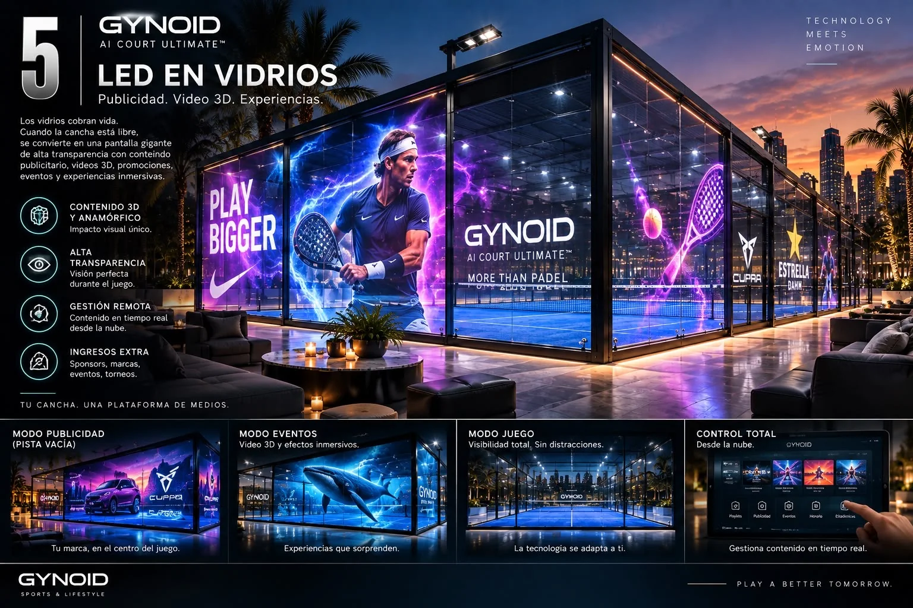
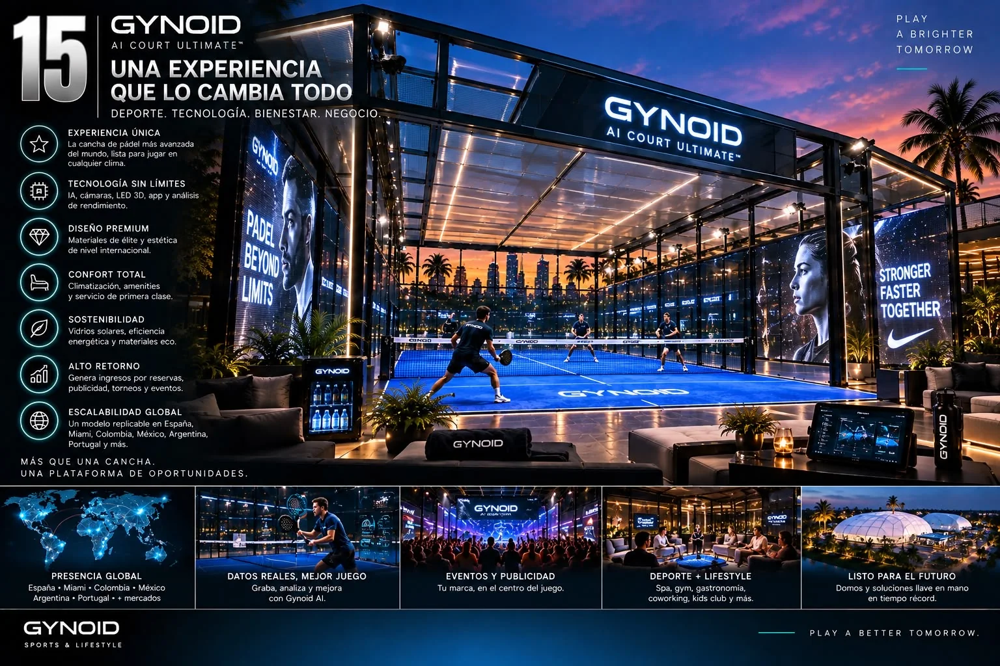
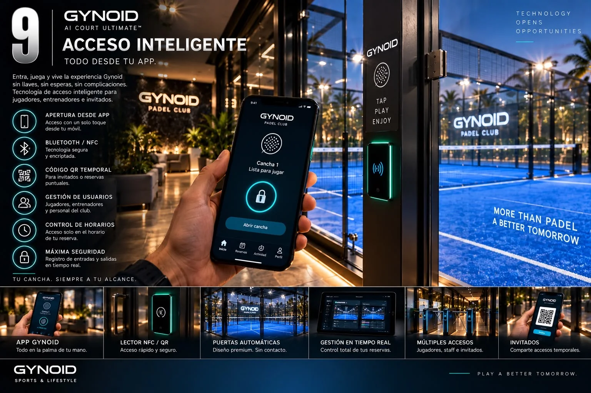
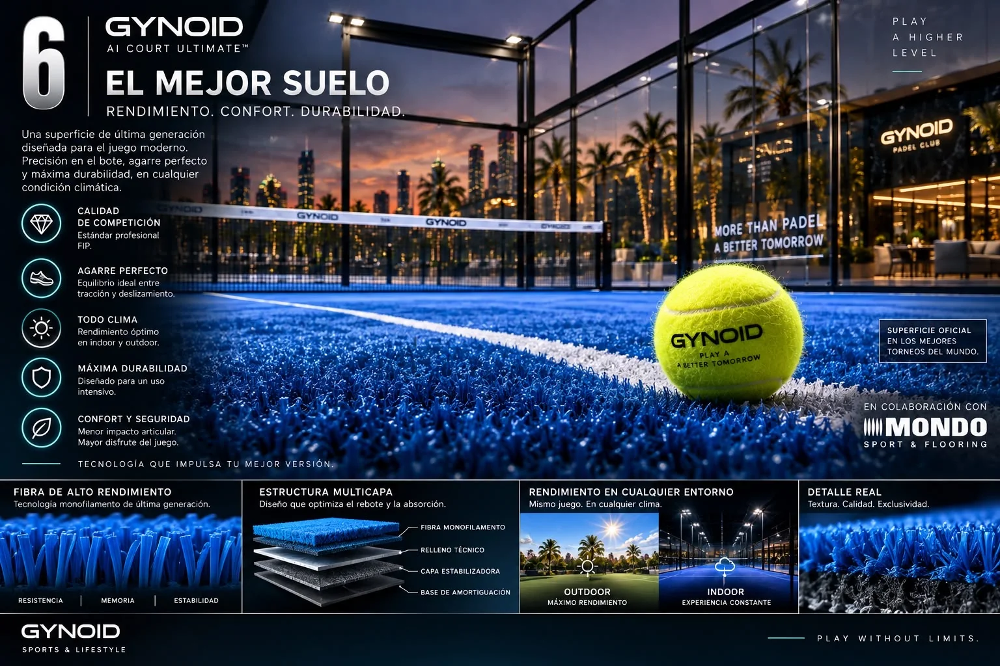
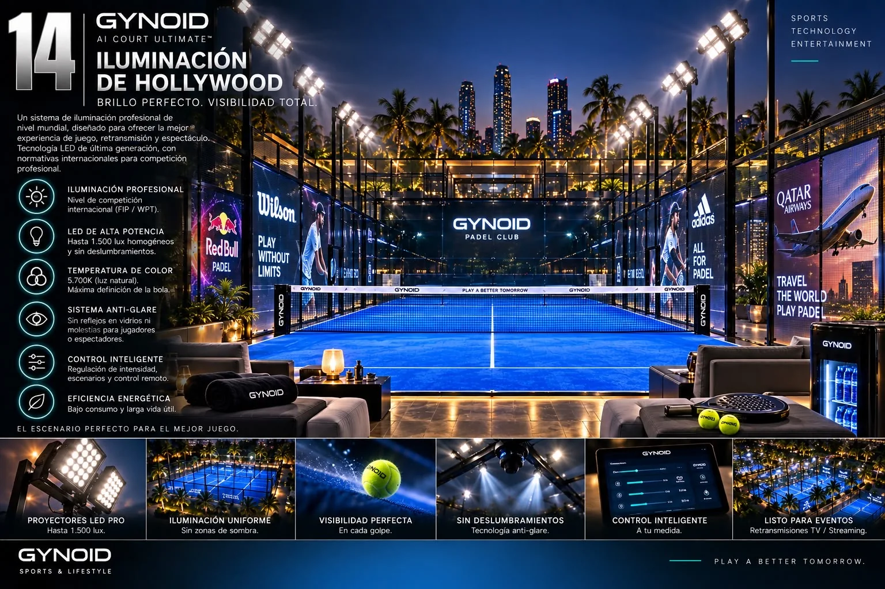
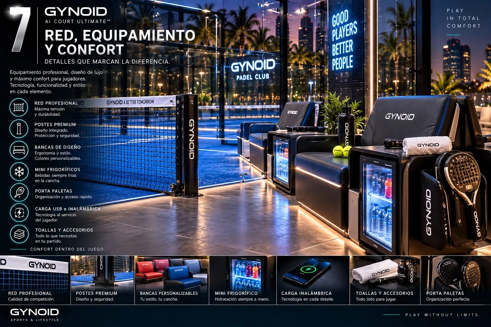

Performance
Superficie, iluminación y estructura concebidas para un juego de alto nivel.
THE INTELLIGENT PADEL COURT
Deporte, inteligencia artificial, automatización, medios digitales, energía y experiencia premium en un único sistema.
ONE COURT. ONE ECOSYSTEM.
Gynoid integra la pista, el software y la experiencia en una arquitectura modular diseñada para clubes, resorts, complejos premium e instalaciones de nueva generación.
Superficie, iluminación y estructura concebidas para un juego de alto nivel.
Cámaras, datos, acceso inteligente y control digital desde un mismo ecosistema.
Diseño, confort, hospitality y tecnología que elevan todo lo que ocurre alrededor del juego.
Nuevas posibilidades de explotación mediante publicidad, eventos, contenido y operación inteligente.
Estructura, cristal, superficie, red e iluminación profesional.
Techo retráctil, sensores y control de las condiciones de juego.
Grabación, análisis, estadísticas, highlights y streaming.
Vidrios LED, publicidad, contenidos 3D y activaciones.
App, NFC, Bluetooth, QR temporal y gestión de usuarios.
Vidrios solares, eficiencia y monitorización energética.
GYNOID AI
Un sistema de cámaras y software para registrar el juego, recuperar los mejores momentos y transformar la actividad de la pista en información útil para jugadores y operadores.
GYNOID MEDIA
Los cerramientos digitales convierten la cancha en un soporte de comunicación de alto impacto para marcas, torneos, eventos y contenido audiovisual.

Transparencia y visibilidad para jugar sin distracciones.

Una cancha que puede convertirse en escenario.
GYNOID CLIMATE
El techo corredizo automatizado permite adaptar la pista al clima y ampliar las horas útiles del activo durante todo el año.

GYNOID ACCESS
Acceso digital para jugadores, invitados, entrenadores y personal. La reserva puede convertirse en la llave.
GYNOID ENERGY
La integración de vidrio fotovoltaico permite combinar cerramiento, transparencia, diseño y generación energética dentro de una misma solución.
BUILT AROUND THE PLAYER
La propuesta Gynoid se extiende desde la superficie y la iluminación hasta el mobiliario, la hidratación y los detalles de hospitality.

Diseñada para equilibrio entre agarre, deslizamiento, confort y durabilidad.

Luz uniforme, controlable y preparada para juego, eventos y contenido audiovisual.

Bancos, refrigeración, carga, accesorios y detalles diseñados como parte del producto.
FROM COURT TO ASSET
Reservas y operación digital
Publicidad y patrocinio
Torneos, eventos y activaciones
Contenido, streaming y comunidad
GYNOID IN DETAIL
BUILD THE NEXT COURT
Clubes, hospitality, real estate, instalaciones privadas y proyectos internacionales.
Contactar con Gynoid El email y las redes se configuran enjs/config.js.